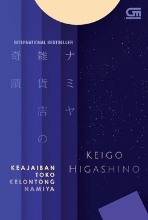

Keajaiban Toko Kelontong Namiya

Novel ini dimulai dengan kisah tiga pemuda berandal-ya, bisa dikatakan kelas ikan teri–bernama Kohei, Shota, dan Atsuya yang hendak lari dari kejaran dan pencarian polisi, setelah mereka bertiga melakukan aksi perampokan saat malam hari. Disebabkan oleh adanya suatu batu sandungan, mereka pun memutuskan untuk istirahat sejenak pada sebuah toko kelontong tua ketika malam itu dengan rencana pergi dari toko itu esok paginya.
Namun, kejanggalan mulai terasa, yaitu saat mereka mendapatkan surat misterius yang meminta suatu pendapat. Sesudah ketiganya membalas surat tersebut, tampaklah surat balasan lainnya dengan surat baru dari pengirim yang berbeda. Shota, Kohei, dan Atsuya saat itu merasa ada yang aneh dan berpikir bahwa mereka seakan dipermainkan oleh seseorang.
Dengan kata lain, ada dalang di balik semua itu yang secara sengaja mempermainkan atau sekadar iseng pada mereka. Pada akhirnya, salah satu dari ketiganya tersadar akan beberapa fakta memungkinkan bahwa surat tersebut adalah asli, yaitu surat dari masa lampau yang dikirim ke masa saat ini.
Latar waktu pada novel ini seketika berjalan mundur menjadi ke masa lampau, yaitu saat Katsuro, seorang anak dari desa yang memiliki impian menjadi seorang musisi ternama, tetapi orang tuanya justru meminta dirinya untuk menjadi penerus penjual ikan.
Merasa dilema dengan keadaan yang ada, Katsuro akhirnya mengirimkan surat ke Toko Kelontong Namiya sebab dirinya kerap kali mendengar isu bahwa toko tersebut menerima semacam konsultasi lewat surat untuk dimintai sebuah saran atau pendapat. Katsuro mengirimkan surat itu pada kisaran tahun 1970-an yang tanpa disadari olehnya bahwa surat tersebut dibalas oleh tiga pemuda beranda di masa depan (Kohei, Shota, dan Atsuya).
Pada mulanya, Katsuro merasa kebingungan akan balasan dari surat itu, terlebih gaya bahasa penulisan surat balasan tersebut tidak merepresentasikan sebuah ‘kebijaksanaan’, layaknya isu yang kerap kali didengar olehnya mengenai Toko Kelontong Namiya.
Namun, Katsuro tidak berhenti sampai di situ, ia pun tetap berupaya dan berjuang untuk menggapai impiannya seperti yang disarankan surat balasan dari toko kelontong Namiya itu, sampai dirinya mampu memperoleh dukungan dari sang orang tuanya. Walaupun Katsuro mengikuti saran dari orang di masa depan, tetapi yang pasti Keigo selaku penulis buku ini tidak segampang itu memberikan akhir kisah dari Katsuro, seperti ekspektasi pembaca yang lainnya.
Lalu, alur mengisahkan mengenai latar belakang dari toko kelontong Namiya ini. Ada seorang kakek bernama Namiya, pemilik toko kelontong tua tersebut yang masih hidup dan aktif dalam membalas surat permintaan saran, mulai dari surat yang tidak serius sampai surat yang amat serius. Mulanya, kakek Namiya hanya berniat untuk mengisi waktu luang dari akhir-akhir masa tuanya.
Kemudian, awalnya pula pengirim surat berasal dari anak-anak kecil yang sekadar iseng, tetapi si kakek itu selalu membalas dan menjawab pertanyaan tersebut dengan serius. Akhirnya, pada suatu hari, si kakek memutuskan untuk menutup ‘jasa konsultasi’ melalui surat. Mengapa? Hal itu karena adanya suatu peristiwa dan mengikuti saran dari anaknya untuk meninggalkan toko kelontong itu agar menetap saja bersama sang anak.
Namun, sang kakek merasa bahwa sumber kebahagiaan di masa tuanya itu terletak pada balas-membalas berbagai surat tersebut. Ia pun meminta tolong kepada anaknya untuk mengantarkan dirinya kembali ke toko kelontong itu. Walaupun hanya semalam, kakek Namiya hanya ingin ditinggal seorang diri di toko kelontong itu guna memberikan sebuah nasihat juga saran secara tulus pada orang-orang yang meminta pertolongan.
Baca Fullnya